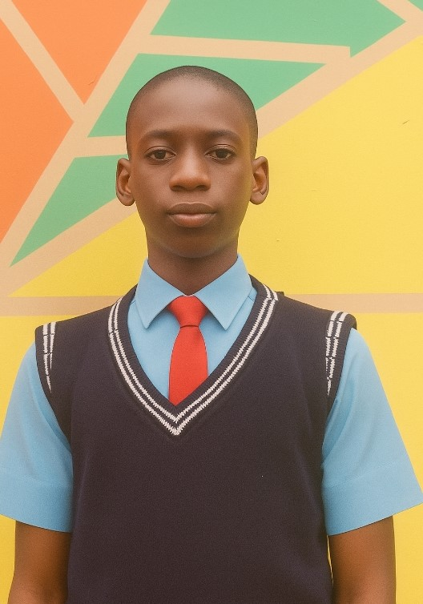
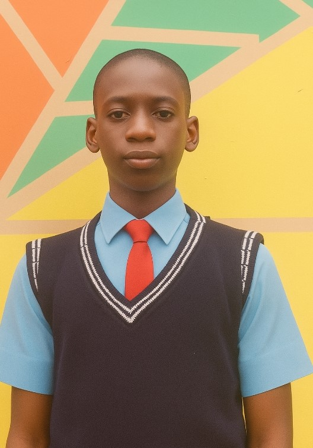

About us
. Kazlam International School
School History, Missions Value and Success stories
Kazlam international school and Early Years
Every school begins with a vision.
This institution was founded in 2017,
established by Salami Ayobami Kazeem with the goal of BUILDING A STANDARD FOUNDATION.
Growth and Development
As the years progressed, the school expanded its curriculum, infrastructure, and student population.
By 2023, it had introduced specialized programs in Creche Section, Nursery Section, Primary Section, Secondary Section, helping students pursue diverse academic and vocational paths. Investments in modern facilities,
such as science laboratories, libraries, and technology-equipped classrooms, ensured that learning remained engaging and forward-thinking.
Partnerships with local and international organizations allowed students and teachers to benefit from exchange programs,
educational grants, and groundbreaking research opportunities.
Significant Achievements
Over the decades, the school has earned recognition for academic excellence, extracurricular accomplishments, and contributions to society.
Some of its notable achievements include: Winning inter-school academic competitions like zenith competition, inter-house sport BATTLE OF UNITY. Producing distinguished alumni who have gone on to make significant impacts in various fields, such as politics, science, business, and the arts.
Establishing a strong tradition of student leadership, social service, and environmental advocacy.
Being ranked among the top institutions in its region due to outstanding performance in standardized examinations.
Traditions and Cultural Heritage
A school is more than its classrooms—it thrives on traditions that define its spirit.
This institution holds annual events such as every first term- carrier day, chrismas caro. every second term- Cultural day and excursion. every third term- graduation/price giving day.
fostering unity and celebrating achievements. The school’s motto, BUILDING A STANDARD FOUNDATION, reflects its commitment to shaping
responsible, knowledgeable, and forward-thinking individuals.
Modern-Day Impact and Future Aspirations
Today, the school stands as a beacon of learning, proudly carrying forward the legacy of its founders. With cutting-edge educational methods, new facilities, and a dedicated faculty, it continues to adapt to the evolving demands of the modern world. Looking ahead, it aims to expand global outreach, introduce innovative learning programs, and uphold its reputation as an institution of excellence.
.png)
Success stories
"What Impressed Me Most was the School Use Of Modern technology-based approach To Learning,As
well As The High Number Of Excellent Results."
SAEED AHMAD
Project Manager For Jet-Club
SAEED AHMAD
Project Manager For Jet-Club
"When I First Joined Kazlam International School The Teachers Had A Significant Impact
On My Academics, They Were Hard Working, Diligent And Deeply Committed To Providing
Students With A High Standard Of Education."
IFEANYI DESTINY
Time Keeper.
IFEANYI DESTINY
Time Keeper.
"The Teachers Played A Major Role In My Personal Growth During My Adolesent Years.
They Helped Me Build Confidence And Taught Me To Stand Up For My Rights
In Situation Making Them Not Just Educators But Also Life Coaches And Role Moden Anyone Can Learn
From And Look Up To. "
MACHEAL DESTINY
Assistant Head-boy.
MACHEAL DESTINY
Assistant Head-boy.
"The staff Played a significant role in my life by building my academic sturcture into a outstanding one
"
JOE JOE
Ex Labour prefect
JOE JOE
Ex Labour prefect